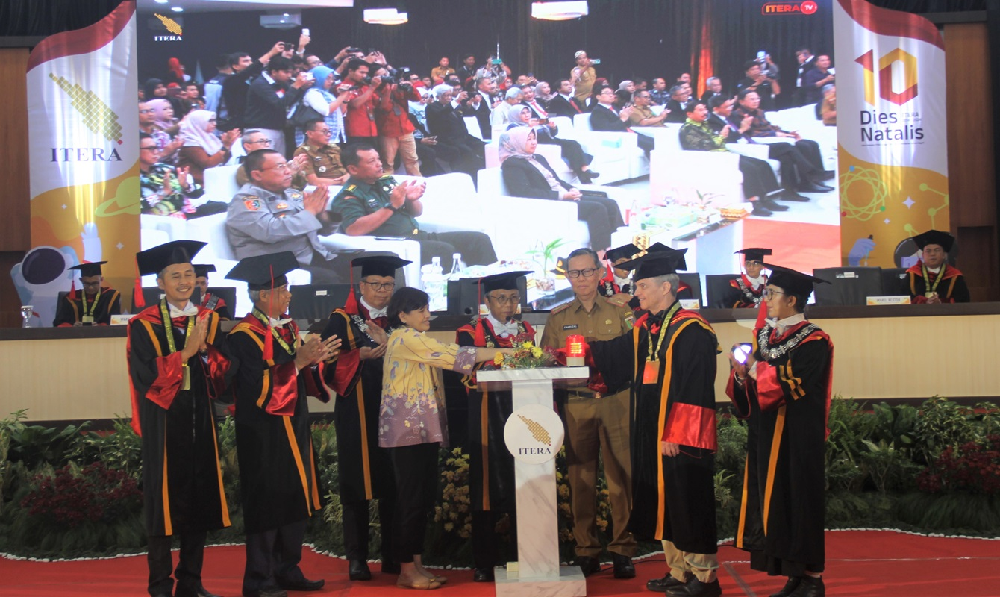

Peringati Satu Dekade, ITERA Luncurkan Pusat Mitigasi Gempa dan Tsunami Sumatera
Dipublikasikan pada — Kategori: Berita

Perayaan Satu Dekade ITERA
Institut Teknologi Sumatera (ITERA) merayakan satu dekade perjalanannya melalui Sidang Dies Natalis ke-10 yang berlangsung di Aula Gedung Kuliah Umum 2 ITERA. Dalam momen ini, ITERA meluncurkan sejumlah inisiatif strategis sebagai bentuk kontribusi nyata bagi Sumatera dan Indonesia.
Peluncuran Pusat Mitigasi Gempa dan Tsunami Sumatera
Salah satu inisiatif utama yang diluncurkan adalah Pusat Mitigasi Gempa dan Tsunami Sumatera. Pusat ini dirancang sebagai lembaga kajian kebencanaan yang berfokus pada prediksi dan mitigasi gempa bumi serta tsunami dengan memanfaatkan riset dan teknologi digital.
Pusat riset ini dipimpin oleh Ir. Harkunti Pertiwi Rahayu, Ph.D., seorang pakar kebencanaan yang sebelumnya berkarier di ITB dan kini bergabung di ITERA. Untuk memperkuat riset dan jejaring keilmuannya, pusat ini juga menjalin kerja sama internasional, salah satunya dengan The Australian National University.
Inisiatif Digital: Itera Mengabdi dan Satu Data Itera
Selain pusat mitigasi bencana, ITERA turut meluncurkan platform digital bernama Itera Mengabdi, yaitu aplikasi yang dirancang untuk membantu pelajar memperdalam pengetahuan di bidang sains. Platform ini digagas oleh Fakultas Sains bersama Unit Penunjang Akademik TIK ITERA. Bersamaan dengan itu, ITERA juga memperkenalkan inisiatif Satu Data Itera sebagai bagian dari upaya digitalisasi data kampus.
Arah dan Capaian ITERA
Dalam pidatonya, Rektor ITERA menekankan bahwa satu dekade ini menjadi tonggak penting perjalanan kampus. Tiga pilar utama turut disampaikan sebagai panduan setiap program ke depan, yaitu ITERA Kuat, ITERA Maslahat, dan ITERA Bermartabat.
Dari sisi capaian, ITERA berhasil menempati peringkat ke-9 nasional untuk kategori kampus terbaik versi Nature Index, yang menilai publikasi riset di bidang biologi, kimia, kebumian, kesehatan, dan fisika.
Apresiasi dan Kolaborasi
Dalam kesempatan yang sama, ITERA turut memberikan penghargaan kepada sejumlah tokoh, dosen, dan tenaga kependidikan atas kontribusi mereka dalam pengembangan kampus. ITERA juga menganugerahkan gelar profesor kehormatan kepada dua akademisi dari Australian National University, serta menandatangani nota kesepahaman dengan Ikatan Ahli Kebencanaan Indonesia (IABI) untuk mendukung riset mitigasi gempa dan tsunami.